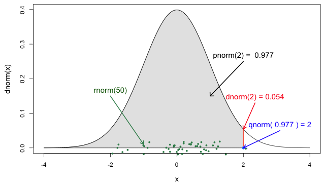
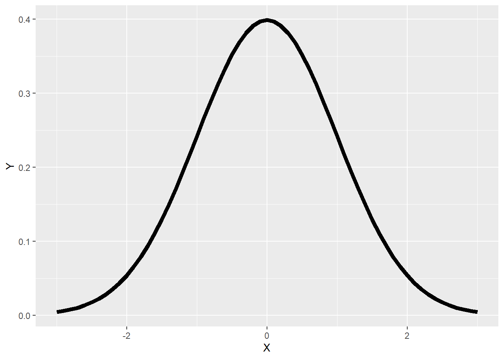
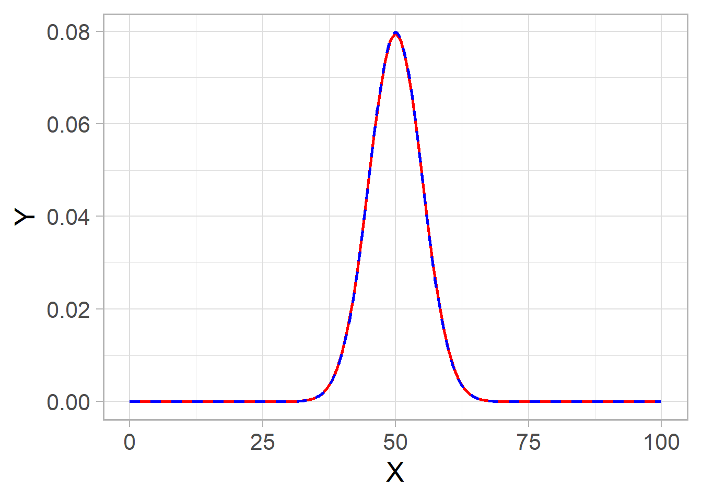
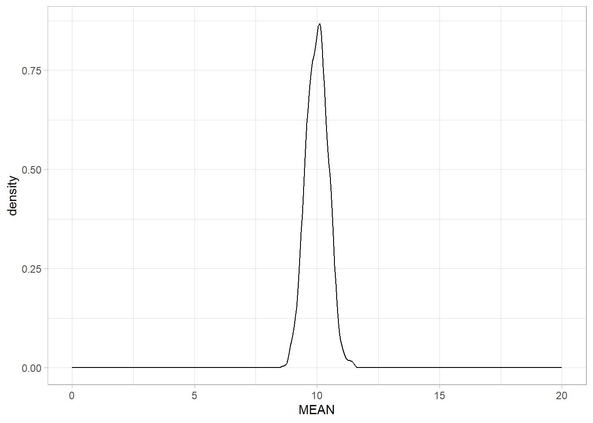
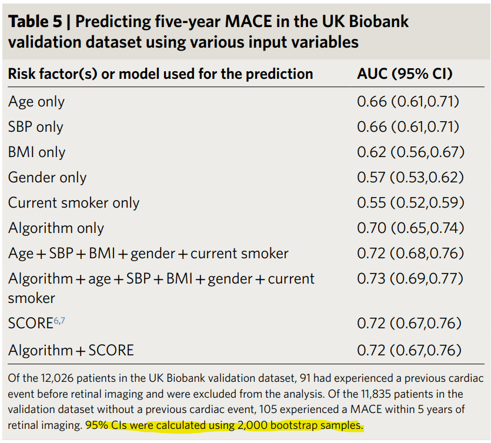

dnorm(0)[1] 0.3989423dnorm(1)[1] 0.2419707dnorm(2)[1] 0.05399097dnorm(-1)[1] 0.2419707dnorm(-2)[1] 0.05399097Yeong Chan Lee
April 5, 2023
4강을 통해서 다양한 확률분포에 대해 배웠습니다. 여기서는 R을 통해 확률분포를 어떻게 표현할 수 있는지 알아보겠습니다.
먼저 가장 와닿는 정규분포입니다.
정규분포는 아래와 같은 확률밀도함수를 갖습니다.
\[ X \sim N(\mu, \sigma^2) \]
\[ f_X(x) = \frac{1}{\sqrt{2 \pi \sigma^2}} e^{-\frac{(x - \mu)^2}{2 \sigma^2}} \]
정규분포를 표현하는 기본 함수로 dnorm, pnorm, qnorm, rnorm이 있습니다. 이 때, 정규분포를 표현하기 위한 두 개의 파라미터는 무엇입니까? 평균과 표준편차(분산)입니다. 딱히 지정하지 않으면 기본값(default)은 평균은 0, 표준편차는 1입니다. ?dnorm 을 통해서 확인할 수 있습니다.

먼저 dnorm은 \(x\) 에 대한 density입니다. \(x\)의 범위는 \((-inf, inf)\)입니다. dnorm(1), dnorm(2) 등 다양하게 시도해보세요.
[1] 0.3989423[1] 0.2419707[1] 0.05399097[1] 0.2419707[1] 0.05399097표준정규분포의 확률밀도함수를 직접 구현해볼까요?
표준정규분포는 0을 기준으로 대칭이기 때문에 dnorm(1)과 dnorm(-1)의 값이 같습니다. 그럼 이를 활용해서 그래프를 그려볼 수 있겠네요.
Attaching package: 'dplyr'The following objects are masked from 'package:stats':
filter, lagThe following objects are masked from 'package:base':
intersect, setdiff, setequal, unionlibrary(ggplot2)
norm_df <- data.frame(X=seq(-3, 3, 0.1))
norm_df <- norm_df %>% mutate(Y = dnorm(X))
ggplot(data=norm_df, aes(x=X, y=Y)) +
geom_line(size=2)Warning: Using `size` aesthetic for lines was deprecated in ggplot2 3.4.0.
ℹ Please use `linewidth` instead.
pnorm 함수는 \(P(X<x)\)와 대응합니다. 예를 들어 우리가 통계학에 배우게 되면 자주 보게 되는 1.96에 대해서 pnorm(1.96)이면\(P(X<1.96) \approx0.975\)가 됩니다.
반대로 qnorm은 확률이 \(P(X<x)\)가 될 때의 \(x\)가 무엇인지를 나타냅니다. 0.975가 들어가면 1.96에 근사하는 값이 나오겠네요.
rnorm은 해당 정규분포에서 density를 랜덤하게 n개를 추출해줍니다. 그러니까 시뮬레이션 연구를 할 때 잘 쓰일 수 있겠습니다.
[1] 1.69869894 0.02663649 -0.62638952 -0.23630300 0.10086453 1.00788479
[7] -0.47044318 -0.30578876 -1.24955006 0.67224746그러면 rnorm에서 랜덤값 1000개 정도 추출하고 histogram을 그리면 정규분포와 비슷하게 그릴 수 있겠네요. 이렇게 랜덤한 값들을 추출할 경우 추출값들이 그때 그때 달라지게 됩니다. 연구의 재현성(reproducibility)을 위해서 랜덤 추출값이 고정되게 나오게끔 set.seed()함수를 사용합니다.
이렇게 각 분포들이 d, p, q, r을 앞에 붙여서 구현되어 있습니다. 우리는 각 분포들의 파라미터를 지정해주면 됩니다. 예를 들어 이항분포의 경우로는 dbinom, pbinom, qbinom, rbinom 이렇게 있습니다.
\[ P(X=k) = \binom{n}{k} p^k (1-p)^{n-k} \]
동전던지기를 10번 시행하는 경우로 예를 들어봅시다. 그러면 n은 10, p는 1/2가 되겠지요. 그 때 확률 변수 \(X\)의 범위는 0부터 10까지 될 것입니다.
\(B(n, p)\) 의 경우 \(npq \geq 5\)조건을 만족하면 \(N(np, np(1-p))\)로 근사될 수 있다고 배웠습니다.
\[ X \sim B(100,{1\over2}) \\ P(X \leq 50) \]
N수가 증가하면 p에 관계 없이 정규분포로 근사하게 됩니다. 직접 다양하게 시도하면서 확인해보세요.
n <- 100
p <- 1/2
binom_df <- data.frame(X=seq(0, n, 1))
binom_df <- binom_df %>% mutate(Y = dbinom(X, size=n, prob=p))
norm_df <- data.frame(X=seq(0, n, 0.1))
norm_df <- norm_df %>% mutate(Y = dnorm(X, mean = n*p, sd = sqrt(n*p*(1-p))))
ggplot() +
geom_line(data=binom_df, aes(x=X, y=Y, group=0), size=1, colour="red") +
geom_line(data=norm_df, aes(x=X, y=Y, group=1), linetype=2, size=1, colour="blue")+
theme_light(base_size = 20)
중심극한 정리에 따르면 모집단의 분포와 관계 없이 표본의 크기가 커질수록 표본 평균의 분포는 정규분포와 가까워집니다.
실제로 그렇게 되는지 확인해봅시다. 포아송 분포를 따르는 샘플을 랜덤하게 뽑은 후 이들의 평균이 정규분포를 따르게 되는지 시각적으로 확인합니다.
result <- c()
# 4. for문을 활용해 1000번정도 반복합시다.
for(n_trials in 1:1000){
# 1. 평균이 10인 Poisson 분포에서 표본을 30개를 뽑습니다.
my_sample <- rpois(n = 50, lambda = 10)
# 2. 추출된 표본의 평균을 구합니다.
my_mean <- mean(my_sample)
# 3. 이를 데이터프레임에 저장합시다.
tmp_df <- data.frame(NUM = n_trials, MEAN = my_mean)
result <- rbind(result, tmp_df)
}
ggplot(data=result, aes(x=MEAN)) +
geom_density() +
xlim(0, 20) +
theme_light()
어떤 통계량의 분포를 가정하지 않고 분포를 파악하고 싶을 때 쓸 수 있는 방법입니다. 내가 가진 표본 n개 샘플을 N번 무작위 복원 추출을 시행하여 나오는 N개의 통계량으로 분포를 확인할 수 있습니다. 이를 통해 Confidence interval을 그려볼 수 있습니다. 실험해보면 알겠지만 표본의 크기는 적당히 커야 합니다. n의 크기가 25 이상은 되어야 한다고 합니다. 1000과 같이 크게 해보세요. t.test 결과와 유사해집니다.
set.seed(1) #재현성을 위해 seed를 정합니다.
my_sample <- rnorm(50) # 우리가 가진 표본의 크기가 50이라고 합시다.
#분포를 가정하지 않고 평균의 분포가 궁금하다고 하면 bootstrap을 쓸 수 있습니다.
mean_vector <- c()
for(i in 1:1000){ # N은 보통 1000이상 지정합니다.
boot_sample <- sample(my_sample, length(my_sample), replace = TRUE)
mean_vector <- c(mean_vector, mean(boot_sample))
}
mean_vector <- sort(mean_vector)
print(paste0("bootstrap mean: ", round(mean(mean_vector), 3)))[1] "bootstrap mean: 0.103"print(paste0("95% bootstrap CI (", round(mean_vector[25], 3), ", ", round(mean_vector[975], 3), ")"))[1] "95% bootstrap CI (-0.12, 0.312)"
One Sample t-test
data: my_sample
t = 0.85432, df = 49, p-value = 0.3971
alternative hypothesis: true mean is not equal to 0
95 percent confidence interval:
-0.1358313 0.3367278
sample estimates:
mean of x
0.1004483 Bootstrap CI는 AUROC에 대한 신뢰구간을 구할 때 종종 쓰입니다. 추가로 AUROC에 대한 CI는 부트스트랩 말고 Delong’s test(DeLong, DeLong, and Clarke-Pearson 1988)를 활용할 수 있습니다 (pROC 패키지).

성균관대학교 삼성융합의과학원 의생명통계학 2023년 1학기 - 이영찬